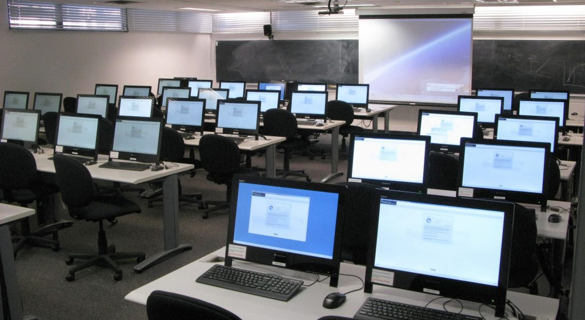

Department of Information Technology
We prepare curious, capable graduates to design, build and manage the technology that keeps organisations moving.
Through practical learning and strong foundations, students develop the skills to solve real-world information and computing challenges.

Our Programs
The Department of Information Technology offers a range of undergraduate and graduate programs designed to equip students with the knowledge and skills needed to succeed in the rapidly evolving field of information technology.
The programme covers areas such as computer hardware and software, computer networking, database management, programming, web development, cybersecurity, and IT support.